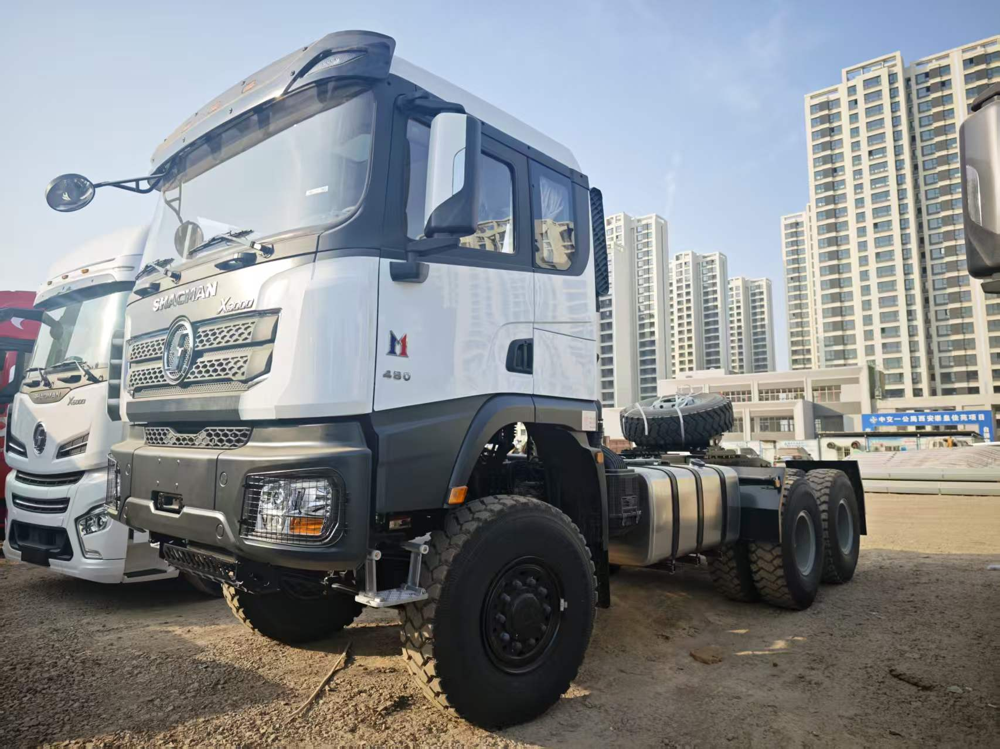

SHACMAN · X3000 · 6x6 TRACTOR
SHACMAN X3000 6x6 Tractor Truck: Rough-Road Buyer Guide
Verified reference specifications, real chassis photos and practical checks for traction, trailer matching and pre-shipment inspection.
Read the X3000 6x6 tractor guide